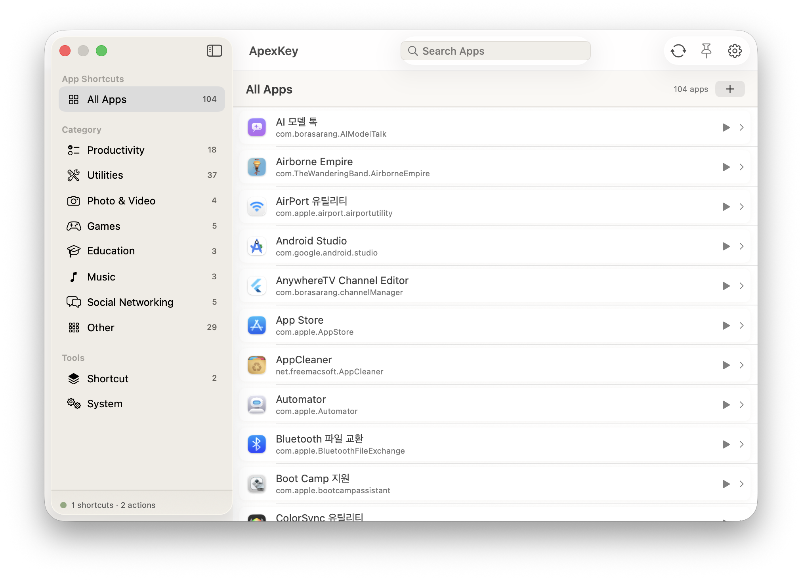

Menu command shortcuts
Enumerate any running app's menu and assign a global hotkey to any command — launch it from anywhere.
macOS menu bar utility · macOS 14+
ApexKey lives in your menu bar. Enumerate any app's menu, assign a global shortcut to any command, and run it from anywhere on screen.

Every app exposes its menus. ApexKey puts them on your fingertips.
Run ApexKey, pick an app, and ApexKey reads its menu tree — every command, every submenu.
Tap the + button on any command and press your keys. ApexKey records the globe.
Press the shortcut from any app. The menu command fires instantly — no clicks, no hunting.
Twelve categories, 152 actions, zero mouse required.
Enumerate any running app's menu and assign a global hotkey to any command — launch it from anywhere.
Chain steps into one action — open an app, type keys, run a script, paste, wait, click, repeat.
If / repeat / choose-from-menu, plus variables and output-to-variable wiring between steps.
Use a model, run writing tools, or generate images — bind any of them to a hotkey.
See every shortcut of the frontmost app in a fullscreen or floating overlay.
From terminal green to paper white — Light, Dark, Neon, Nord, Paper, Terminal, and Osaurus presets.
macOS 14 (Sonoma) or later · Apple Silicon & Intel
Homebrew (brew install borasarang/tap/apexkey) is on the way.
# Build from source
brew install xcodegen
xcodegen generate --spec project.yml
./build_and_run.sh debug macos